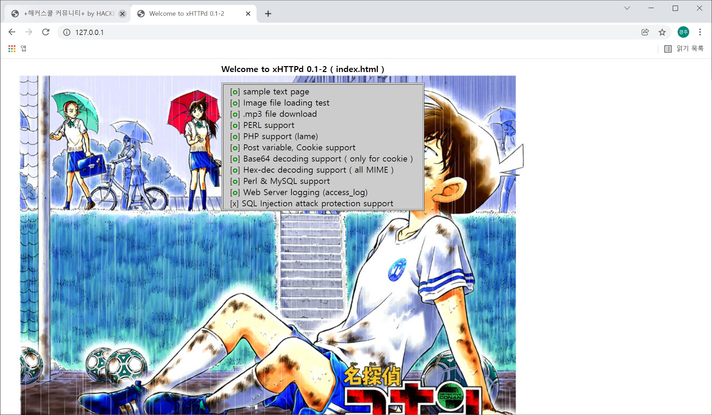

xHTTPd Web Server Daemon For Linux
1. Screenshot and Intro

[ScreenShot - Index demo screen]
The open source project is the purposes of education hacking and security for world hackers and security researchers.
and so writing this source codes. It written in C language. also support OpenBSD Unix tested. via some source code
auditing, the source codes are secured. and I will patched bugs during the
patch days.
2. Download
3. OpenSource Developer
I researched about hacking in wowhacker community from south korea and my passion was so up and successfully
activated during year 2000. Yes I was a 1337 hacker. And I decided to become a open source developer for the xHTTPd project.
I will coding it with many efforts to add many basic and interesting features.
4. Donation
If you want to donate by money then mail me. I will give you my nonghyup bank account.
5. e-mail
a.k.a x90 <x90cx90c1@gmail.com>
EOF